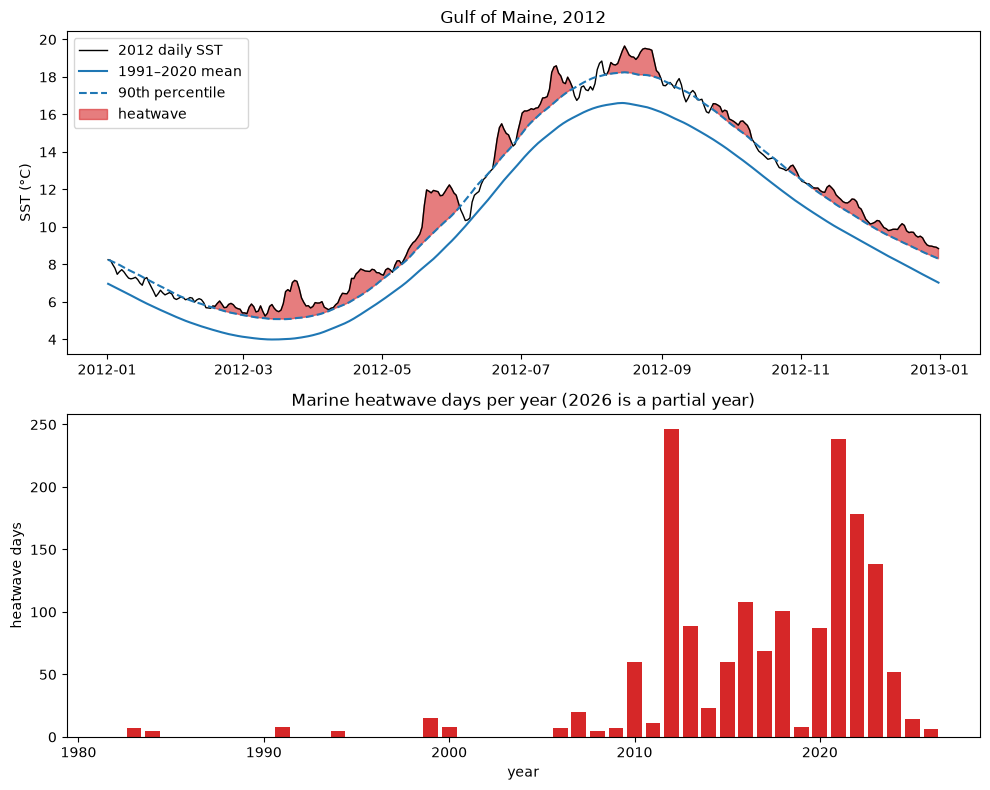

%pip install -q "icechunk>=2.3" "xarray>=2026.7" "zarr>=3.4" matplotlibOISST: marine heatwaves in the Gulf of Maine

The Gulf of Maine is one of the fastest-warming patches of ocean on Earth, and its 2012 marine heatwave upended the lobster season (Mills et al. 2013). Here we count marine heatwave days in every year since 1982, from NOAA’s daily OISST v2.1.
That takes the full daily record, about 16,500 NetCDF files. The virtual Icechunk store, maintained by NERACOOS / GMRI, makes them one dataset, so it is one sel(). No credentials needed.
What counts as a marine heatwave
The standard definition (Hobday et al. 2016): a marine heatwave is at least 5 days in a row when the temperature is above the 90th percentile for that day of the year, measured against a 30-year baseline. Here the baseline is 1991–2020, and the percentile is smoothed with a 31-day running mean (a slight simplification of Hobday’s method).
Open the dataset
The daily/ group holds only references; every value is read by byte range from NOAA’s files on AWS.
import time
import icechunk, xarray as xr, zarr
import matplotlib.pyplot as plt
zarr.config.set({"async.concurrency": 32})
url = "https://data.source.coop/ocean-icechunks/noaa-oisst/oisst.icechunk"
repo = icechunk.Repository.open(icechunk.http_storage(url))
# The data stay in NOAA's public S3 bucket: allow anonymous reads there.
auth = icechunk.containers_credentials(
{p: icechunk.s3_anonymous_credentials() for p in repo.config.virtual_chunk_containers})
repo = repo.reopen(authorize_virtual_chunk_access=auth)
daily = xr.open_zarr(repo.readonly_session("main").store, group="daily",
consolidated=False, chunks=None)
daily<xarray.Dataset> Size: 548GB
Dimensions: (time: 16508, zlev: 1, lat: 720, lon: 1440)
Coordinates:
* time (time) datetime64[ns] 132kB 1981-09-01T12:00:00 ... 2026-11-...
preliminary (time) bool 17kB ...
* zlev (zlev) float32 4B 0.0
* lat (lat) float32 3kB -89.88 -89.62 -89.38 ... 89.38 89.62 89.88
* lon (lon) float32 6kB 0.125 0.375 0.625 0.875 ... 359.4 359.6 359.9
Data variables:
anom (time, zlev, lat, lon) float64 137GB ...
err (time, zlev, lat, lon) float64 137GB ...
ice (time, zlev, lat, lon) float64 137GB ...
sst (time, zlev, lat, lon) float64 137GB ...
Attributes: (12/38)
title: NOAA/NCEI 1/4 Degree Daily Optimum Interpolat...
source: ICOADS, NCEP_GTS, GSFC_ICE, NCEP_ICE, Pathfin...
id: oisst-avhrr-v02r01.20261111_preliminary.nc
naming_authority: gov.noaa.ncei
summary: NOAAs 1/4-degree Daily Optimum Interpolation ...
cdm_data_type: Grid
... ...
ncei_template_version: NCEI_NetCDF_Grid_Template_v2.0
comment: Data was converted from NetCDF-3 to NetCDF-4 ...
sensor: Thermometer, AVHRR
Conventions: CF-1.6, ACDD-1.3
references: Reynolds, et al.(2007) Daily High-Resolution-...
Description: Reynolds, et al.(2007) Daily High-resolution ...Nothing has been read yet but metadata, and xarray already knows how much data it can reach:
print(f"Size reported by xarray: {daily.nbytes / 1e9:,.0f} GB")Size reported by xarray: 548 GBEvery day since 1981, averaged over the Gulf of Maine
A box from 42 to 44.5 °N and 70.5 to 66 °W; land reads as NaN and drops out of the mean. Each chunk in NOAA’s files is a whole global map, so even this small box reads every file once. It took about 3 minutes on a JupyterHub in AWS; elsewhere, including Colab, expect longer.
With 16,500 requests, a dropped connection now and then is likely, and one is enough to stop a single big read. So read a year at a time, and try a year again if it fails.
box = daily.sst.squeeze("zlev").sel(lat=slice(42, 44.5), lon=slice(289.5, 294))
def read_year(year, tries=3):
for attempt in range(tries):
try:
return box.sel(time=str(year)).mean(["lat", "lon"]).load()
except Exception as err: # usually a dropped connection: try again
print(f"{year}: attempt {attempt + 1} failed ({type(err).__name__})")
raise RuntimeError(f"could not read {year}")
start = time.time()
gom = xr.concat([read_year(y) for y in range(1981, daily.time.dt.year.values[-1] + 1)], dim="time")
print(f"{gom.time.size:,} days read in {time.time() - start:.0f} s")16,508 days read in 139 sFind the heatwave days
base = gom.sel(time=slice("1991", "2020")).groupby("time.dayofyear")
def smooth(c): # 31-day running mean, wrapping around the new year
return c.pad(dayofyear=15, mode="wrap").rolling(dayofyear=31, center=True).mean()[15:-15]
clim = smooth(base.mean())
p90 = smooth(base.quantile(0.9)).drop_vars("quantile")
doy = gom.time.dt.dayofyear
hot = (gom > p90.sel(dayofyear=doy)).to_series()
run = hot.ne(hot.shift()).cumsum() # number each run of hot / not-hot days
heatwave = hot & hot.groupby(run).transform("size").ge(5) # keep runs of 5 days or more
days_per_year = heatwave.groupby(heatwave.index.year).sum().loc[1982:]fig, (ax1, ax2) = plt.subplots(2, 1, figsize=(10, 8))
y = "2012"
one = gom.sel(time=y)
ax1.plot(one.time, one, color="k", lw=1, label=f"{y} daily SST")
ax1.plot(one.time, clim.sel(dayofyear=one.time.dt.dayofyear), color="tab:blue", label="1991–2020 mean")
ax1.plot(one.time, p90.sel(dayofyear=one.time.dt.dayofyear), color="tab:blue", ls="--", label="90th percentile")
ax1.fill_between(one.time, p90.sel(dayofyear=one.time.dt.dayofyear), one,
where=heatwave.loc[y].values, color="tab:red", alpha=0.6, label="heatwave")
ax1.set(ylabel="SST (°C)", title=f"Gulf of Maine, {y}")
ax1.legend(loc="upper left")
ax2.bar(days_per_year.index, days_per_year, color="tab:red")
ax2.set(xlabel="year", ylabel="heatwave days",
title=f"Marine heatwave days per year ({days_per_year.index[-1]} is a partial year)")
plt.tight_layout()
plt.show()
In 2012 (top) the Gulf of Maine sat above its 90th percentile for most of the year: 246 heatwave days. Before 2010, heatwaves here were rare, about 3 days a year on average and never more than 20. Since 2010 the average is 93 days a year, with 2021 (238 days) close to 2012. 2024–2026 have been calmer so far.
One caution: the baseline is fixed at 1991–2020, so a steadily warming ocean shows up as more heatwave days. Hobday et al. discuss this; detrending first, or a moving baseline, separates short extremes from the long-term warming.
More: NOAA’s OISST page and the store’s README, which also describes the monthly/ group for long, cheap time series.